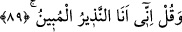

başkasına gelmediği kesindir.”
Senin zâtın iyi huyun vasfıdır
Senin huyun iyilik sermâyesidir
Hakîm ve Kadîm olan ezelde dikmiştir
Senin boyuna göre “yüce ahlâk” hil‘atını
89. De ki: “Şüphesiz ben apaçık bir uyarıcıyım.”
“De ki: “Şüphesiz ben” Allah’ın azâbının gelip isâbet edeceğini ortaya koyan
“apaçık bir uyarıcıyım.”
İnsânü’l-uyûn’da 87. âyetin sebeb-i nüzûlü hakkında şu hâdise zikredilir: Ebû Cehl’e
âid bir kervan çok sayıda malla birlikte Şam’dan geldi. Kervanda yedi kâfile
bulunuyordu. Rasûlullah (s.a.) ve ashâbı da kafilelere bakıyorlardı. Ashâbının çoğu ise
aç ve elbisesiz idi. O sırada Nebî (a.s.)’ın zihninden arkadaşlarının bu muhtaç
durumlarıyla ilgili birtakım temennîler geçince bu âyet nâzil oldu. Buna göre âyetin
mânâsı şöyledir: “Bu yedi kâfile yerine sana tekrarlanan yediyi verdik. Ebû Cehl’e
vermiş olduğumuz o âdî dünyâ malına gözünü dikme, arkadaşların için de üzülme. Onlar
için kanadını indir. Çünkü senin onlara alçakgönüllü davranman onların gönüllerine,
hoşlarına giden dünyâlıkları elde etmekten çok daha hoş gelir.
el-Câmiu’s-sağîr’in zevâidinde yer alan bir rivâyette şöyle buyrulmuştur: “Şâyet
terâzînin bir kefesine Fâtihatü’l-Kitâb diğer kefesine de Kur’an konulsa, Fâtihatü’l-
Kitâb Kur’an’dan yedi kere daha ağır basardı.”[92]
“Fâtihatü’l-Kitâb bütün hastalıklara şifâdır.”[93]
Yukarıdaki (87-89.) âyetlerin işârî yorumu şöyledir: Allah Teâlâ, insân-ı kâmil olan
peygamberine (s.a.) şöyle buyuruyor: “Andolsun ki, biz sana tekrarlanan”
tekrarlananın husûsiyetinden “yediyi” yâni, Allah’ın yedi zâtî sıfatı olan hayat, ilim
kudret, sem’, besar, irâde ve kelâm sıfatlarını verdik.
Tekrarlananın husûsiyetinden olan ise muzhiriyyettir. Allah’ın zât ve sıfatlarını
muzhiriyyet ise insana has kılınmıştır. İnsandan başkasında melek bile olsa muzhiriyyet
yoktur. “Ve Allah Âdem’e tüm isimleri öğretti.” âyetinin (el-Bakara, 2/31) sırlarından
biri daha böylece ortaya çıkmış olmaktadır. Çünkü Allah’ın zâtının ve sıfatlarının
isimleri de bu öğretilen isimlere dâhildir.
Âdem bu zât ve sıfat isimlerinin hem mazharı hem de muzhiri (ızhar eden) olmuştur.
Melekler ise Allah’ın bazı sıfatlarının mazharı oldukları hâlde muzhiri olamamışlardır.
Allah Teâlâ bu yüzden: “Sonra onları meleklere arz ederek şöyle dedi: “Şâyed doğru
söylüyorsanız, şunların isimlerini bana haber verin!” (el-Bakara, 2/31) buyurmuştur.